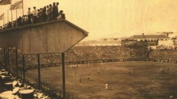

El Estadio Alberto J. Armando, popularmente conocido como La Bombonera, es un estadio de fútbol perteneciente al Club Atlético Boca Juniors, ubicado en el barrio de La Boca en la ciudad de Buenos Aires, Argentina.

Victor Sulcic, arquitecto esloveno responsable de la obra del Mercado de Abasto, se ganó, junto con sus socios Raúl Bes y José Luis Delpini, la oportunidad de diseñar semejante estructura allá por 1932. Un año antes, Ruperto Molfino, presidente del Xeneize por aquella época, había adquirido el terreno que el club ya ocupaba de hecho: en el mismo lugar donde hoy se erige una bestia de cemento había un campo de juego con tribunas de madera desde 1922. La Bombonera se inauguró un 25 de mayo de 1940, bajo la dirigencia de Camilo Cichero, y, a partir de allí, fue sede de incontables hazañas.